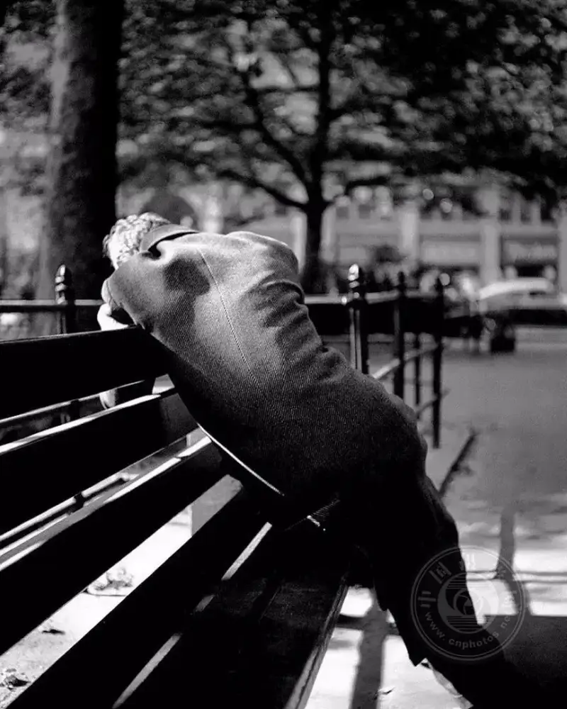
Like many things, photography has a standard for good and bad. What is that standard? The leading British photographer Michael Freeman gives six standards to judge a work:
1. A good photo must carry an idea
Real art has some depth of thought. The idea in a photo may be a surface compositional choice, or a deeper concept. It may even surprise the photographer, but the photo still needs something that lets the viewer grasp its imagination.
This matters especially in photography, because a photo can be taken with no idea at all. Like other arts, photography can succeed on its lowest common denominator.
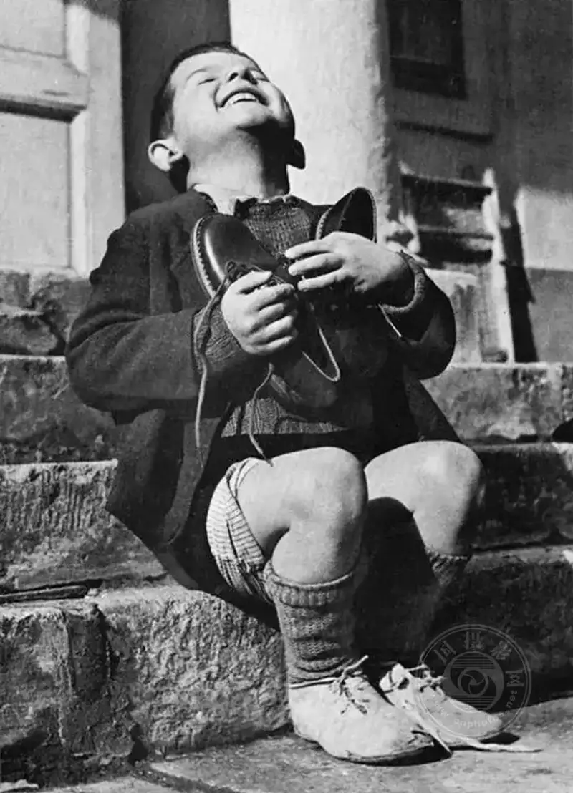
Many photos called successful are seen by some as shallow. The shooting may be hard, yet they often lack an idea.
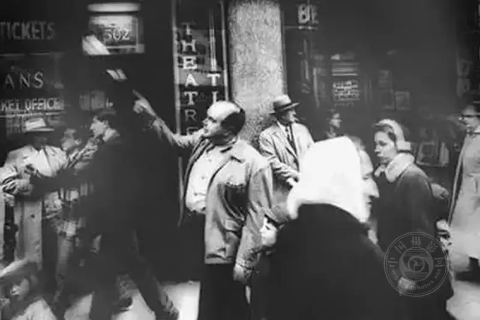
2. A good photo has mature technique
Good images have many traits that are technically or conceptually right: the subject is in sharp focus, the exposure is moderate, the frame covers the scene dynamic range, the composition pleases most people, and even the choice of subject is sound.
These and many other skills are the basics of photography that you must not ignore. Above all, understand the principles of composition and lighting.
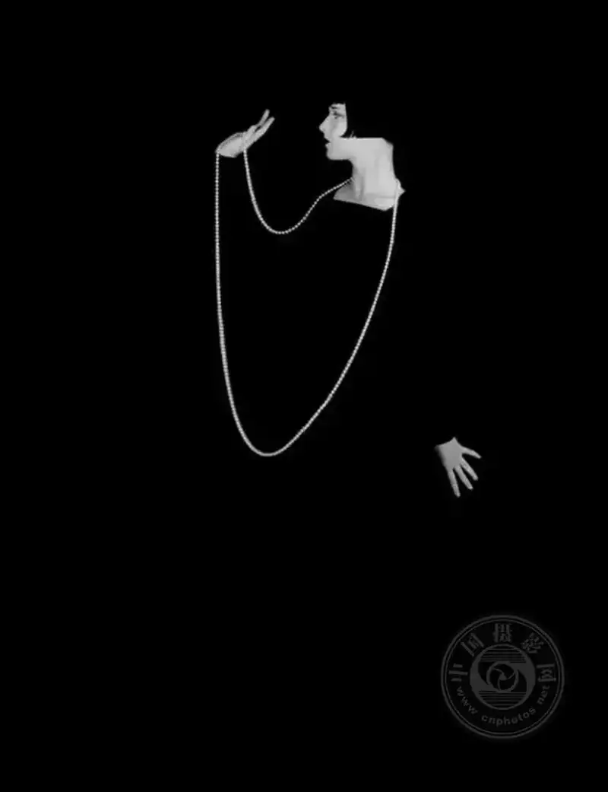
A photographer who masters these principles can use them freely to create. Post-processing may be the most visible skill in a photo. A skillful photo can be praised for its technique alone.
The photo below, Dream//Life, shows heavy summer rain. A man huddles under the awning at the corner of George Street and Market Street, his tie flung over his shoulder after running through this Sydney thunderstorm.
The compositional skill of this photo lies in Park sensitivity to light- especially high-contrast light. - . He brings different depths into the frame to balance them, and lets the viewer eye rest on the splashing raindrops at the center.
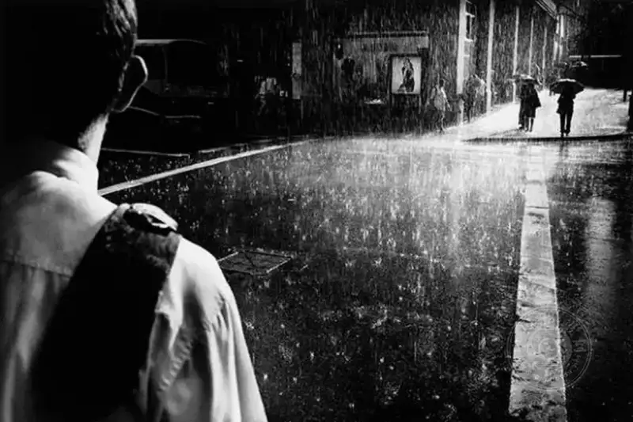
3. A good photo gives the viewer a sense of the unfamiliar
Good photography stimulates the eye and sparks the viewer interest, showing the image is attractive. If the viewer first reacts with I have seen a photo like this before, the work has failed.
This may be a harsh judgment. Photographers want their photos to be seen, noticed, and discussed, and that requires the photo to stimulate the viewer and provoke thought.
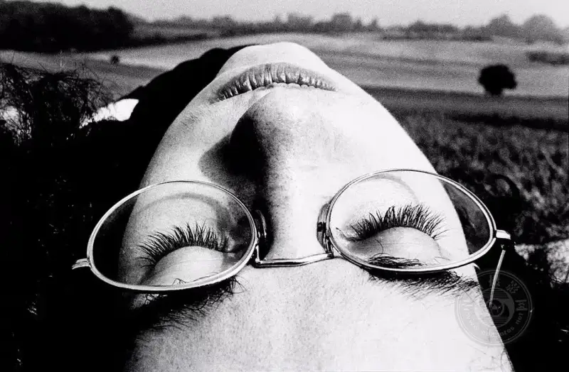
For creative photography, problems appear when the photographer tries to guess the viewer reaction. Focusing too much on that reaction leads to failure, and the photo looks overdone with an obvious intent that is hard to like. Photography viewers want to see something fresh through the photographer imaginative eye.
Yet if people think the photographer is simply trying to please them, they often feel cheated.
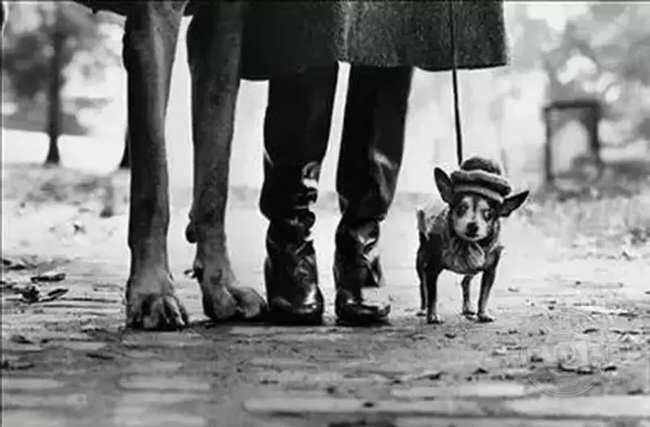
4. A good photo gives the viewer multiple layers of feeling
A good photo gives the viewer more than a direct, obvious image. It can work on many levels. In other words, viewing good photography brings layered feelings. Among the arts, photography stands out here because it has a natural tension with truth. A photo is tied to life and cannot break away from it.
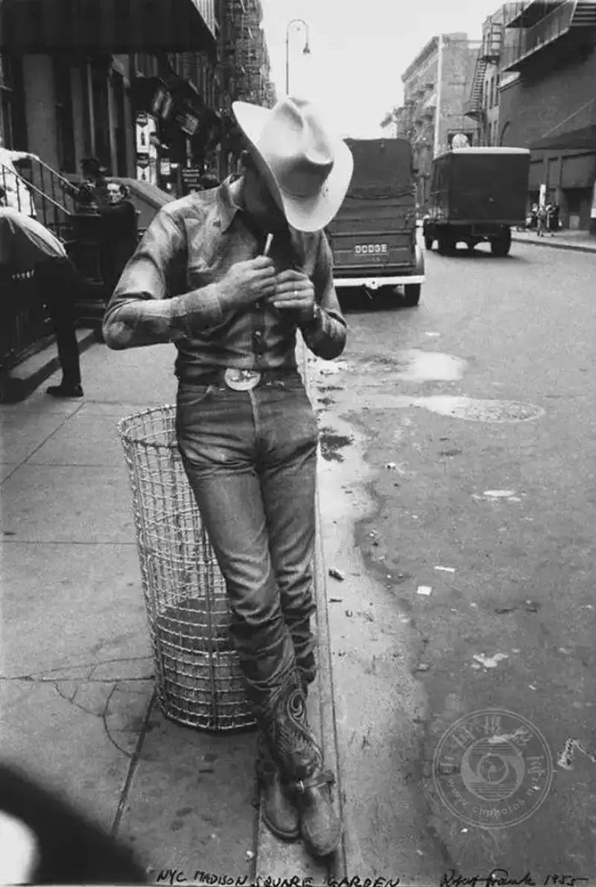
Creatively, the photographer can use this relation well. The photographer has two frames of reference to express and explore, but this needs creation and awareness. Resonating with the viewer is a basic requirement.
People like to discover, seek stimulation, and find relations and deeper things. For a photo, being too obvious is a worse fault than being obscure, because it insults the viewer intelligence.
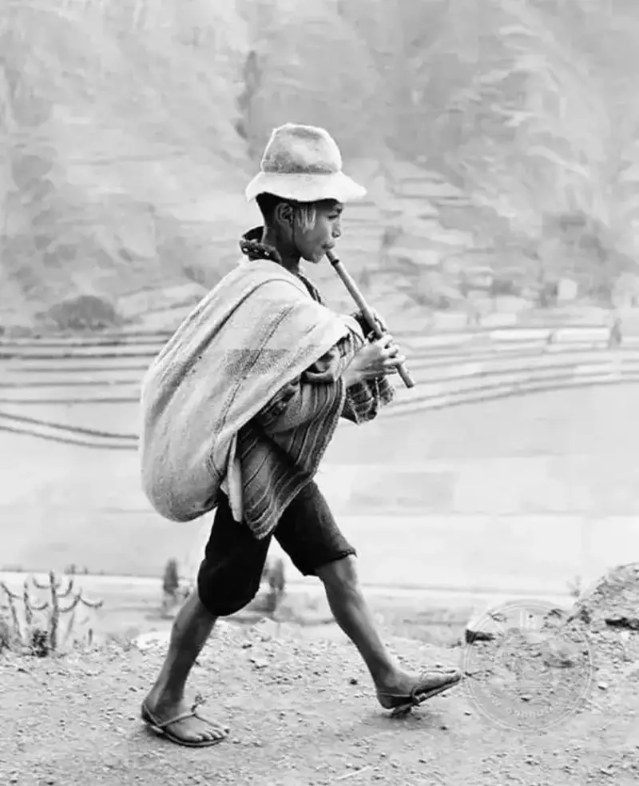
An image that lays everything bare, states the obvious, and offers nothing more is hard to look at twice, and hard to like.
Finally, these layered feelings carry surprise and the unpredictable. Though the above may suggest that all successful photos are planned from the start, many excellent ones are made when the photographer does not at first notice what they have.
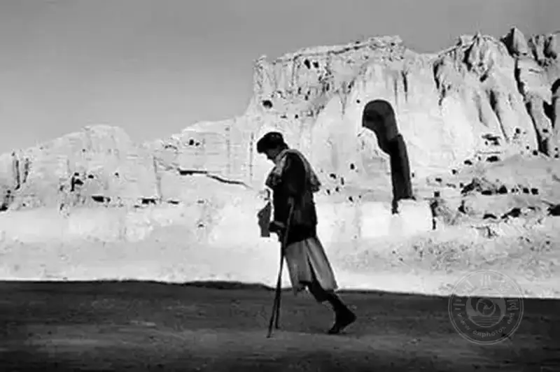
5. A good photo has its own photographic context
Knowing the images already in the public eye is a precondition for good photography. As noted above, a work that panders to the viewer is in danger. But photography is deeply embedded in the present. It is part of what everyone sees daily, so it must have a cultural context.
Photography has an inherent presentness, and most people like photography tied to here and now.19 photography of the 19 century. They are charming and precious, but not of the present.
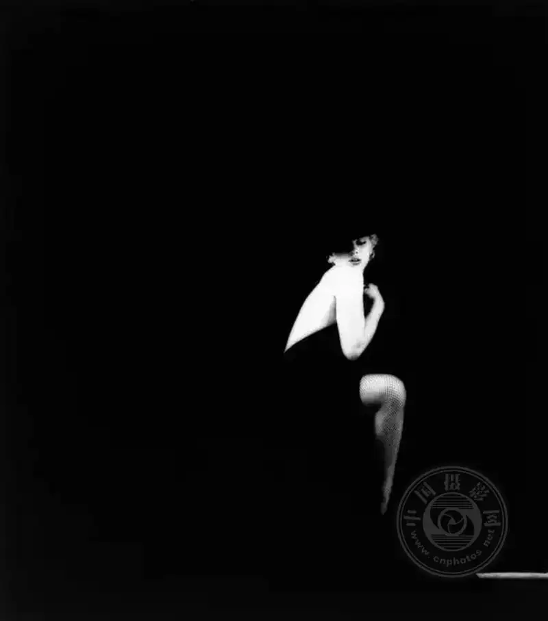
A mature photographer knows how their images fit others context. Some photographers try to imitate others, or at least follow the same direction.
Others do the opposite and keep their distance from certain photographers. Still, all of them sense that viewers may judge their work in a wider context.
For example, a photographer who shoots still life may believe their work adds to still-life photography, but it cannot escape comparison with masters such as Paul Outerbridge (Paulouterbridge） and Irving Penn (Irving Penn）).
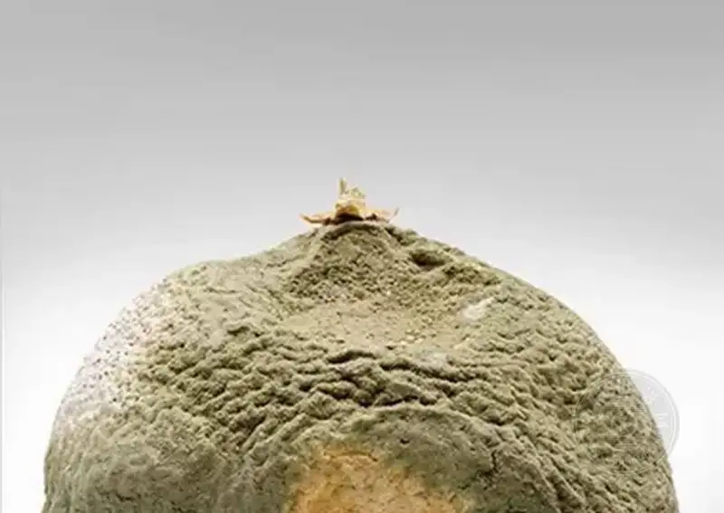
6. A good photo does not imitate
Each art should focus on its own strength and not imitate others, a long-held view. The influential critic Clement Greenberg wrote that the one proper area of each art lies in what is unique to its medium, and no art should borrow from others to stay pure.
So good photography should not try to imitate other arts, or at least should do so with irony.
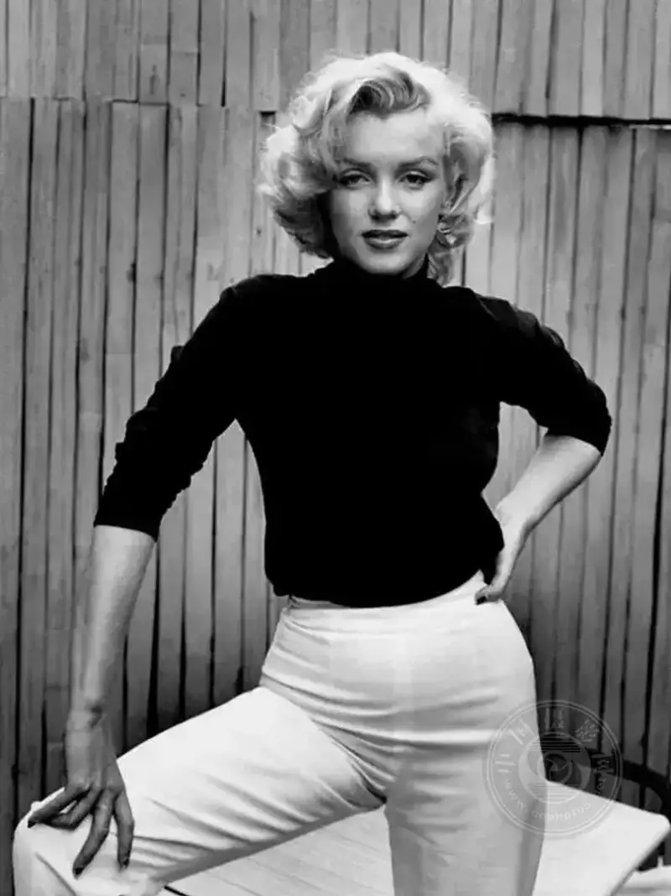
Photography should explore its own medium, which means the photographer needs a clear sense of what photography is good at. Beyond that, good photography should not imitate other works, but should show what is new among as many images as possible.
So documentary is photography strength, which led to a way of working that stresses clarity, objectivity, and a calm, impersonal expression.
Documentary with personal expression that captures emotional moments is another approach that also relies on photography uniqueness. Another trait of the photographic medium is its own optical features, such as flare, focus, motion blur, reflections, and shadows, all of which offer rich possibilities. On one hand the camera captures these easily, and on the other they carry a kind of illusion, just like the photo itself.
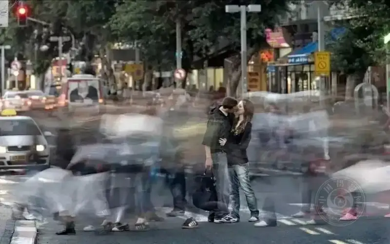